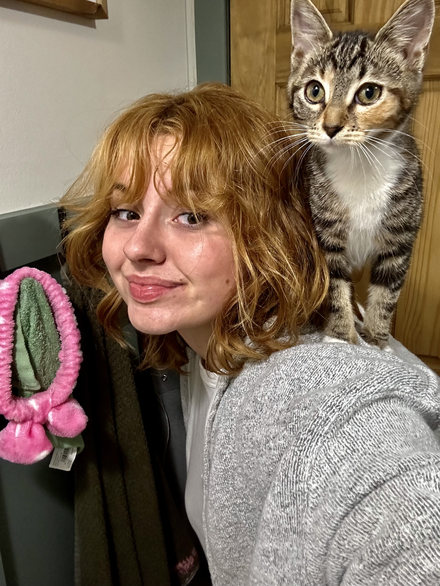
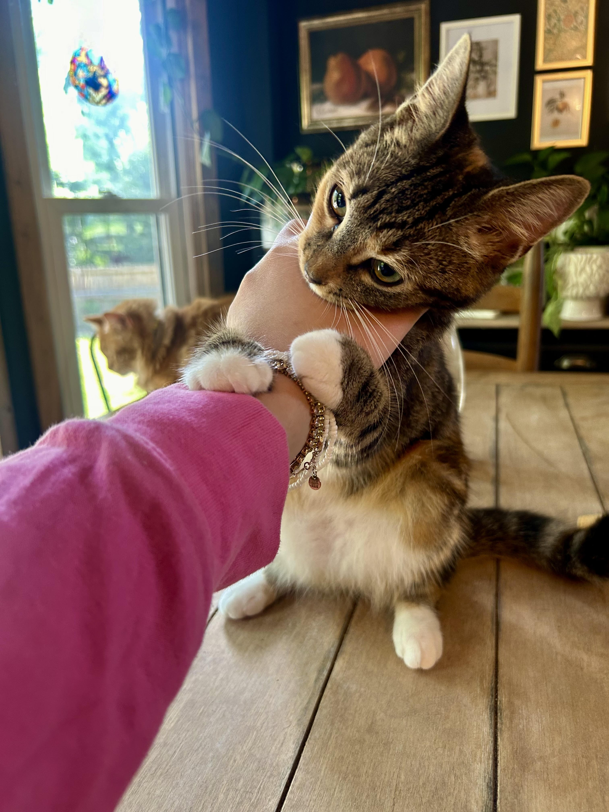

Junie is a playful and affectionate rescue cat who became part of my life when she was just 3 weeks old. She was saved from an animal hoarding situation and needed lots of love and care. Junie has a rare condition called symmetrical cat dwarfism, which gives her tiny legs and a kitten-like appearance forever! Despite her condition, Junie runs, plays, and purrs just like any other cat. Her sweet nature and determination make her a true inspiration.
Today, Junie is two years old and fully grown, but she only weighs 5 pounds! She lives with five other cats—Dexter, Dory, Jager, Marianne, and Wilbur—and a lovable Pit Bull named Lola. Junie has a feisty personality and absolutely adores kitty treats. She loves playing, going outside on her catio, laying on the couch and the stove (even though she’s not supposed to!), and following her mom around everywhere she goes. She’s especially fond of her mom’s nephew, Quincy. Junie truly is the best kitty ever.
 